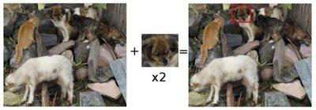
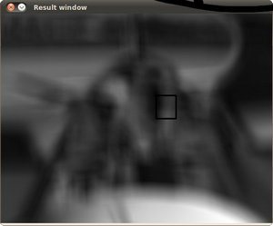

Template Matching¶
Goal¶
In this tutorial you will learn how to:
- Use the OpenCV function matchTemplate to search for matches between an image patch and an input image
- Use the OpenCV function minMaxLoc to find the maximum and minimum values (as well as their positions) in a given array.
Theory¶
What is template matching?¶
How does it work?¶
We need two primary components:
- Source image (I): The image in which we expect to find a match to the template image
- Template image (T): The patch image which will be compared to the template image
our goal is to detect the highest matching area:
To identify the matching area, we have to compare the template image against the source image by sliding it:

By sliding, we mean moving the patch one pixel at a time (left to right, up to down). At each location, a metric is calculated so it represents how “good” or “bad” the match at that location is (or how similar the patch is to that particular area of the source image).
For each location of T over I, you store the metric in the result matrix (R). Each location
 in R contains the match metric:
in R contains the match metric:
the image above is the result R of sliding the patch with a metric TM_CCORR_NORMED. The brightest locations indicate the highest matches. As you can see, the location marked by the red circle is probably the one with the highest value, so that location (the rectangle formed by that point as a corner and width and height equal to the patch image) is considered the match.
In practice, we use the function minMaxLoc to locate the highest value (or lower, depending of the type of matching method) in the R matrix.
Which are the matching methods available in OpenCV?¶
Good question. OpenCV implements Template matching in the function matchTemplate. The available methods are 6:
method=CV_TM_SQDIFF

method=CV_TM_SQDIFF_NORMED
method=CV_TM_CCORR
method=CV_TM_CCORR_NORMED

method=CV_TM_CCOEFF
where
method=CV_TM_CCOEFF_NORMED

Code¶
What does this program do?
- Loads an input image and a image patch (template)
- Perform a template matching procedure by using the OpenCV function matchTemplate with any of the 6 matching methods described before. The user can choose the method by entering its selection in the Trackbar.
- Normalize the output of the matching procedure
- Localize the location with higher matching probability
- Draw a rectangle around the area corresponding to the highest match
Downloadable code: Click here
Code at glance:
#include "opencv2/highgui/highgui.hpp"
#include "opencv2/imgproc/imgproc.hpp"
#include <iostream>
#include <stdio.h>
using namespace std;
using namespace cv;
/// Global Variables
Mat img; Mat templ; Mat result;
char* image_window = "Source Image";
char* result_window = "Result window";
int match_method;
int max_Trackbar = 5;
/// Function Headers
void MatchingMethod( int, void* );
/** @function main */
int main( int argc, char** argv )
{
/// Load image and template
img = imread( argv[1], 1 );
templ = imread( argv[2], 1 );
/// Create windows
namedWindow( image_window, CV_WINDOW_AUTOSIZE );
namedWindow( result_window, CV_WINDOW_AUTOSIZE );
/// Create Trackbar
char* trackbar_label = "Method: \n 0: SQDIFF \n 1: SQDIFF NORMED \n 2: TM CCORR \n 3: TM CCORR NORMED \n 4: TM COEFF \n 5: TM COEFF NORMED";
createTrackbar( trackbar_label, image_window, &match_method, max_Trackbar, MatchingMethod );
MatchingMethod( 0, 0 );
waitKey(0);
return 0;
}
/**
* @function MatchingMethod
* @brief Trackbar callback
*/
void MatchingMethod( int, void* )
{
/// Source image to display
Mat img_display;
img.copyTo( img_display );
/// Create the result matrix
int result_cols = img.cols - templ.cols + 1;
int result_rows = img.rows - templ.rows + 1;
result.create( result_rows, result_cols, CV_32FC1 );
/// Do the Matching and Normalize
matchTemplate( img, templ, result, match_method );
normalize( result, result, 0, 1, NORM_MINMAX, -1, Mat() );
/// Localizing the best match with minMaxLoc
double minVal; double maxVal; Point minLoc; Point maxLoc;
Point matchLoc;
minMaxLoc( result, &minVal, &maxVal, &minLoc, &maxLoc, Mat() );
/// For SQDIFF and SQDIFF_NORMED, the best matches are lower values. For all the other methods, the higher the better
if( match_method == CV_TM_SQDIFF || match_method == CV_TM_SQDIFF_NORMED )
{ matchLoc = minLoc; }
else
{ matchLoc = maxLoc; }
/// Show me what you got
rectangle( img_display, matchLoc, Point( matchLoc.x + templ.cols , matchLoc.y + templ.rows ), Scalar::all(0), 2, 8, 0 );
rectangle( result, matchLoc, Point( matchLoc.x + templ.cols , matchLoc.y + templ.rows ), Scalar::all(0), 2, 8, 0 );
imshow( image_window, img_display );
imshow( result_window, result );
return;
}
Explanation¶
Declare some global variables, such as the image, template and result matrices, as well as the match method and the window names:
Mat img; Mat templ; Mat result; char* image_window = "Source Image"; char* result_window = "Result window"; int match_method; int max_Trackbar = 5;
Load the source image and template:
img = imread( argv[1], 1 ); templ = imread( argv[2], 1 );
Create the windows to show the results:
namedWindow( image_window, CV_WINDOW_AUTOSIZE ); namedWindow( result_window, CV_WINDOW_AUTOSIZE );
Create the Trackbar to enter the kind of matching method to be used. When a change is detected the callback function MatchingMethod is called.
char* trackbar_label = "Method: \n 0: SQDIFF \n 1: SQDIFF NORMED \n 2: TM CCORR \n 3: TM CCORR NORMED \n 4: TM COEFF \n 5: TM COEFF NORMED"; createTrackbar( trackbar_label, image_window, &match_method, max_Trackbar, MatchingMethod );
Wait until user exits the program.
waitKey(0); return 0;
Let’s check out the callback function. First, it makes a copy of the source image:
Mat img_display; img.copyTo( img_display );
Next, it creates the result matrix that will store the matching results for each template location. Observe in detail the size of the result matrix (which matches all possible locations for it)
int result_cols = img.cols - templ.cols + 1; int result_rows = img.rows - templ.rows + 1; result.create( result_rows, result_cols, CV_32FC1 );
Perform the template matching operation:
matchTemplate( img, templ, result, match_method );
the arguments are naturally the input image I, the template T, the result R and the match_method (given by the Trackbar)
We normalize the results:
normalize( result, result, 0, 1, NORM_MINMAX, -1, Mat() );
We localize the minimum and maximum values in the result matrix R by using minMaxLoc.
double minVal; double maxVal; Point minLoc; Point maxLoc; Point matchLoc; minMaxLoc( result, &minVal, &maxVal, &minLoc, &maxLoc, Mat() );
the function calls as arguments:
- result: The source array
- &minVal and &maxVal: Variables to save the minimum and maximum values in result
- &minLoc and &maxLoc: The Point locations of the minimum and maximum values in the array.
- Mat(): Optional mask
For the first two methods ( CV_SQDIFF and CV_SQDIFF_NORMED ) the best match are the lowest values. For all the others, higher values represent better matches. So, we save the corresponding value in the matchLoc variable:
if( match_method == CV_TM_SQDIFF || match_method == CV_TM_SQDIFF_NORMED ) { matchLoc = minLoc; } else { matchLoc = maxLoc; }
Display the source image and the result matrix. Draw a rectangle around the highest possible matching area:
rectangle( img_display, matchLoc, Point( matchLoc.x + templ.cols , matchLoc.y + templ.rows ), Scalar::all(0), 2, 8, 0 ); rectangle( result, matchLoc, Point( matchLoc.x + templ.cols , matchLoc.y + templ.rows ), Scalar::all(0), 2, 8, 0 ); imshow( image_window, img_display ); imshow( result_window, result );
Results¶
Testing our program with an input image such as:

and a template image:

Generate the following result matrices (first row are the standard methods SQDIFF, CCORR and CCOEFF, second row are the same methods in its normalized version). In the first column, the darkest is the better match, for the other two columns, the brighter a location, the higher the match.
 


The right match is shown below (black rectangle around the face of the guy at the right). Notice that CCORR and CCDEFF gave erroneous best matches, however their normalized version did it right, this may be due to the fact that we are only considering the “highest match” and not the other possible high matches.

Help and Feedback
You did not find what you were looking for?- Ask a question on the Q&A forum.
- If you think something is missing or wrong in the documentation, please file a bug report.